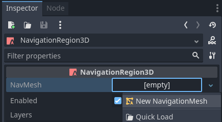
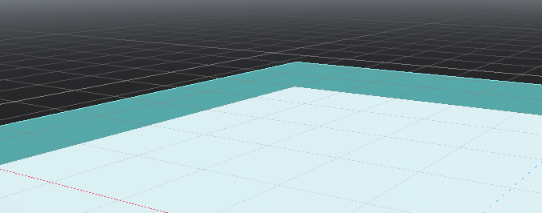
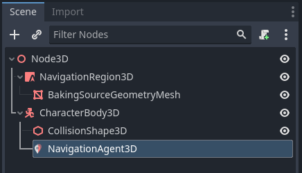

Tổng quan về navigation 3D
Godot cung cấp nhiều đối tượng, lớp và server để hỗ trợ navigation và tìm đường dựa trên lưới hoặc dựa trên mesh cho game 2D và 3D. Phần sau đây cung cấp tổng quan nhanh về tất cả các đối tượng liên quan đến navigation hiện có trong Godot cho scene 3D và công dụng chính của chúng.
Godot cung cấp các đối tượng và lớp sau cho navigation 3D:
- Astar3D
Các đối tượng
Astar3Dcung cấp tùy chọn tìm đường đi ngắn nhất trong một đồ thị gồm các điểm có trọng số.Lớp AStar3D phù hợp nhất cho gameplay 3D dựa trên ô, khi không yêu cầu actor đến được mọi vị trí có thể trong một khu vực mà chỉ cần đến các vị trí riêng biệt được định nghĩa trước.
- NavigationServer3D
NavigationServer3Dcung cấp một API server mạnh mẽ để tìm đường đi ngắn nhất giữa hai vị trí trên một khu vực được xác định bởi navigation mesh.NavigationServer phù hợp nhất cho gameplay 3D thời gian thực khi yêu cầu actor đến được mọi vị trí có thể trong khu vực được xác định bởi navigation mesh. Navigation dựa trên mesh mở rộng tốt với thế giới game lớn, vì một khu vực rộng thường có thể được định nghĩa bằng một đa giác duy nhất trong khi lẽ ra cần rất, rất nhiều ô lưới.
NavigationServer chứa các navigation map khác nhau, mỗi map gồm các region chứa dữ liệu navigation mesh. Agent có thể được đặt lên một map để tính toán avoidance. RID được dùng để tham chiếu đến các map, region và agent nội bộ khi giao tiếp với server.
- Các loại RID của NavigationServer sau đây hiện có.
- NavMap RID
Tham chiếu đến một navigation map cụ thể chứa các region và agent. Map sẽ cố gắng nối các navigation mesh của các region dựa trên khoảng cách gần. Map sẽ đồng bộ các region và agent mỗi frame vật lý.
- NavRegion RID
Tham chiếu đến một navigation region cụ thể có thể chứa dữ liệu navigation mesh. Region có thể được bật / tắt hoặc giới hạn việc sử dụng bằng bitmask navigation layer.
- NavLink RID
Tham chiếu đến một navigation link cụ thể nối hai vị trí trên navigation mesh qua khoảng cách bất kỳ.
- NavAgent RID
Tham chiếu đến một avoidance agent cụ thể. Avoidance được xác định bởi một giá trị bán kính.
- RID của NavObstacle
Tham chiếu đến một avoidance obstacle cụ thể dùng để tác động và giới hạn vận tốc avoidance của các agent.
Các node scene tree sau đây có sẵn để hỗ trợ làm việc với API NavigationServer3D.
- Node NavigationRegion3D
Một Node chứa resource Navigation Mesh định nghĩa navigation mesh cho NavigationServer3D.
Region có thể được bật / tắt.
Việc sử dụng trong tìm đường có thể được giới hạn thêm thông qua bitmask
navigation_layers.NavigationServer3D sẽ nối các navigation mesh của các region dựa trên khoảng cách gần để tạo thành một navigation mesh kết hợp.
- Node NavigationLink3D
Một Node nối hai vị trí trên navigation mesh qua khoảng cách bất kỳ để phục vụ tìm đường.
Link có thể được bật / tắt.
Link có thể là một chiều hoặc hai chiều.
Việc sử dụng trong tìm đường có thể được giới hạn thêm thông qua bitmask
navigation_layers.
Link cho bộ tìm đường biết rằng tồn tại một kết nối và chi phí của nó. Việc xử lý và di chuyển agent thực tế cần được thực hiện trong script tùy chỉnh.
- Node NavigationAgent3D
Một Node trợ giúp dùng để đơn giản hóa các lệnh gọi API NavigationServer3D phổ biến cho tìm đường và avoidance. Hãy dùng Node này với một Node cha kế thừa Node3D.
- Node NavigationObstacle3D
Một Node có thể dùng để tác động và giới hạn vận tốc avoidance của các agent đã bật avoidance. Node này KHÔNG ảnh hưởng đến việc tìm đường của agent. Để làm điều đó, bạn cần thay đổi navigation mesh.
Navigation mesh 3D được định nghĩa bằng các resource sau:
- Resource NavigationMesh
Một resource chứa dữ liệu navigation mesh 3D. Nó cung cấp các tùy chọn bake hình học 3D để định nghĩa khu vực navigation trong Editor cũng như lúc chạy.
Node NavigationRegion3D dùng resource này để định nghĩa khu vực navigation của nó.
NavigationServer3D dùng resource này để cập nhật navigation mesh của từng region.
GridMap Editor dùng resource này khi các navigation mesh cụ thể được định nghĩa cho từng ô lưới.
Xem thêm
Bạn có thể xem navigation 3D hoạt động thực tế như thế nào qua dự án demo 3D Navigation.
Thiết lập cho scene 3D
Các bước sau trình bày thiết lập cơ bản cho navigation tối thiểu khả dụng trong 3D. Nó dùng NavigationServer3D và một NavigationAgent3D để di chuyển theo đường đi.
Thêm một Node NavigationRegion3D vào scene.
Nhấp vào node region và thêm một Resource NavigationMesh mới cho node region.

Thêm một node MeshInstance3D mới làm node con của node region.
Chọn node MeshInstance3D, thêm một PlaneMesh mới và tăng kích thước xy lên 10.
Chọn lại node region và nhấn nút "Bake Navmesh" trên thanh trên cùng.
Lúc này một navigation mesh trong suốt xuất hiện, lơ lửng cách phía trên PlaneMesh một khoảng.

Thêm một node CharacterBody3D vào scene với một collision shape cơ bản và một mesh nào đó để hiển thị.
Thêm một node NavigationAgent3D bên dưới node nhân vật.

Thêm một script vào node CharacterBody3D với nội dung sau. Chúng ta đảm bảo đặt mục tiêu di chuyển sau khi scene đã tải xong hoàn toàn và NavigationServer đã có thời gian đồng bộ. Ngoài ra, hãy thêm một Camera3D cùng một ít ánh sáng và môi trường để có thể nhìn thấy gì đó.
extends CharacterBody3D
var movement_speed: float = 2.0
var movement_target_position: Vector3 = Vector3(-3.0,0.0,2.0)
@onready var navigation_agent: NavigationAgent3D = $NavigationAgent3D
func _ready():
# These values need to be adjusted for the actor's speed
# and the navigation layout.
navigation_agent.path_desired_distance = 0.5
navigation_agent.target_desired_distance = 0.5
# Make sure to not await during _ready.
actor_setup.call_deferred()
func actor_setup():
# Wait for the first physics frame so the NavigationServer can sync.
await get_tree().physics_frame
# Now that the navigation map is no longer empty, set the movement target.
set_movement_target(movement_target_position)
func set_movement_target(movement_target: Vector3):
navigation_agent.set_target_position(movement_target)
func _physics_process(delta):
if navigation_agent.is_navigation_finished():
return
var current_agent_position: Vector3 = global_position
var next_path_position: Vector3 = navigation_agent.get_next_path_position()
velocity = current_agent_position.direction_to(next_path_position) * movement_speed
move_and_slide()
using Godot;
public partial class MyCharacterBody3D : CharacterBody3D
{
private NavigationAgent3D _navigationAgent;
private float _movementSpeed = 2.0f;
private Vector3 _movementTargetPosition = new Vector3(-3.0f, 0.0f, 2.0f);
public Vector3 MovementTarget
{
get { return _navigationAgent.TargetPosition; }
set { _navigationAgent.TargetPosition = value; }
}
public override void _Ready()
{
base._Ready();
_navigationAgent = GetNode<NavigationAgent3D>("NavigationAgent3D");
// These values need to be adjusted for the actor's speed
// and the navigation layout.
_navigationAgent.PathDesiredDistance = 0.5f;
_navigationAgent.TargetDesiredDistance = 0.5f;
// Make sure to not await during _Ready.
Callable.From(ActorSetup).CallDeferred();
}
public override void _PhysicsProcess(double delta)
{
base._PhysicsProcess(delta);
if (_navigationAgent.IsNavigationFinished())
{
return;
}
Vector3 currentAgentPosition = GlobalTransform.Origin;
Vector3 nextPathPosition = _navigationAgent.GetNextPathPosition();
Velocity = currentAgentPosition.DirectionTo(nextPathPosition) * _movementSpeed;
MoveAndSlide();
}
private async void ActorSetup()
{
// Wait for the first physics frame so the NavigationServer can sync.
await ToSignal(GetTree(), SceneTree.SignalName.PhysicsFrame);
// Now that the navigation map is no longer empty, set the movement target.
MovementTarget = _movementTargetPosition;
}
}
Ghi chú
Ở frame đầu tiên, map của NavigationServer chưa đồng bộ dữ liệu region và mọi truy vấn đường đi đều sẽ trả về rỗng. Hãy chờ NavigationServer đồng bộ bằng cách await một frame trong script.